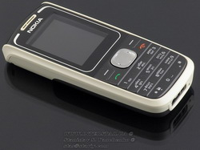
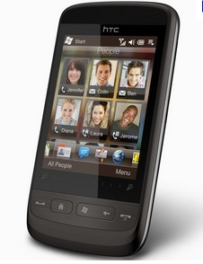

Когда-то у меня уже был смартфон. Это было сильно давно и долгие загрузки, зависания и аккумулятор как-то достали меня и следующим телефоном стала Nokia 1650. Телефон стоил 1100, батарейки хватает на неделю после падения разбирается на 5 частей, и потом в течение полминуты вновь легко собирается.

Нельзя сказать, что телефон стал любовью навек. С помощью него нельзя было зайти в интернет-банк, длина имени в телефонной книжке ограничена несколькими символами, разумеется нет более удобного тачскрина, да и все мужчины, говорят, большие дети. Поэтому периодически в интернете и магазинах новинки телефоностроения я изучал.
Вчера, в процессе поиска фотоаппарата, наткнулся в магазине DNS на телефоны со скидкой. Узнал почему скидка, оказалось телефоны после гарантийного ремонта. Гарантия — 3 месяца.
Симпатичный HTC Touch II стоил чуть меньше 6 тысяч рублей, при цене нового около 11 т.р., что довольно приятно.

На телефоне стоит windows 6.5, тачскрин, небольшой. В общем полный комплект.
От покупки в последний момент уберегли 3 момента.
1. Не понравилась юзабельность Windows
2. Экран был немного поцарапан в углу.
3. И самое главное. В магазине DNS персонала явно человек 20. у каждого из них есть наверняка хотя бы 5 хороших знакомых. Ответа на вопрос почему из 100 знакомых никто не захотел купить смартфон за полцены если он такой хороший я не нашел.